Tutorial of TNA with R
This is a short tutorial of the tna package. We begin by
loading the package and the example data set
group_regulation.
Building tna Model
TNA models can be built with the tna function, which
accepts several types of data such a sequence data, data frames or
matrices.
Plotting and interpreting tna models
Interpretation of the model
The nodes are the states and the arrows the transition probabilities between them; the filled share of the ring (donut) around each node is its initial probability. The thicker an arrow, the more likely the process moves from one state to the other.
# TNA visualization
plot(model)
#> Registered S3 method overwritten by 'cograph':
#> method from
#> plot.tna_bootstrap tna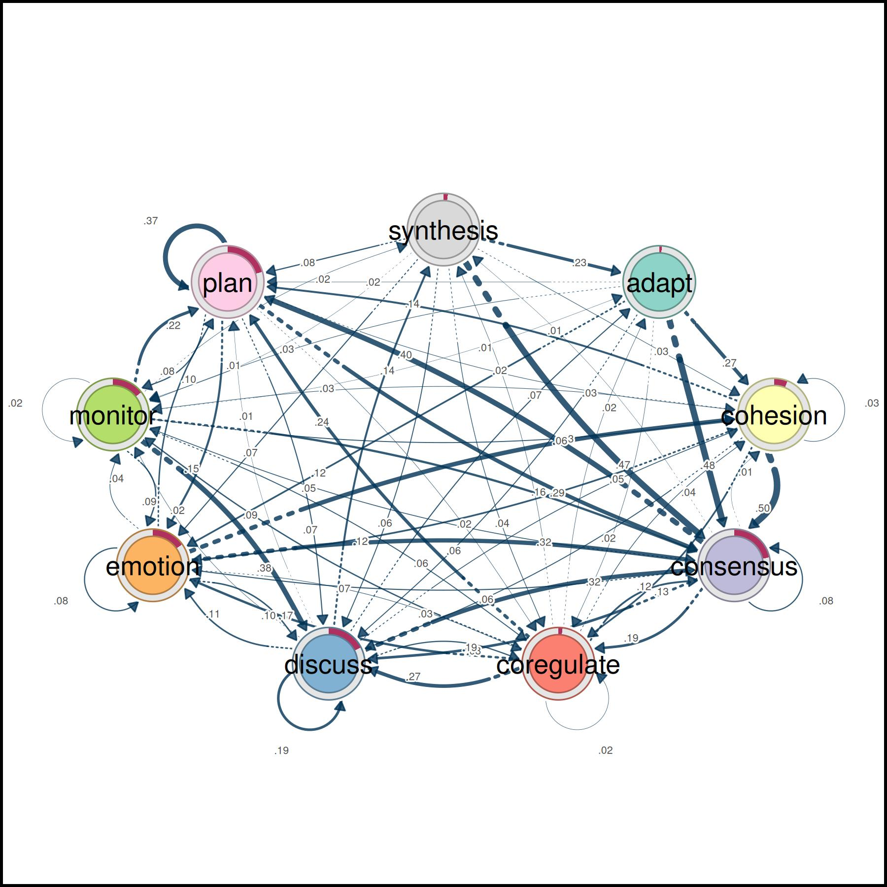
Pruning and retaining edges that “matter”
A transition network estimated from sequences has an edge for almost
every observed pair of states, and most of them are rare. Pruning
removes the weakest edges so that the backbone of the process is
visible. The three methods differ in how they define weak: a fixed
weight (threshold), a share of the weakest edges
(lowest), or edges that are not significant relative to the
other edges of the same state (disparity). The unpruned
model is plotted last for reference.
layout(matrix(1:4, ncol = 2, byrow = TRUE))
# Pruning with different methods (using comparable parameters)
pruned_threshold <- prune(model, method = "threshold", threshold = 0.15)
pruned_lowest <- prune(model, method = "lowest", lowest = 0.15)
pruned_disparity <- prune(model, method = "disparity", level = 0.5)
# Plotting for comparison
plot(pruned_threshold)
plot(pruned_lowest)
plot(pruned_disparity)
plot(model)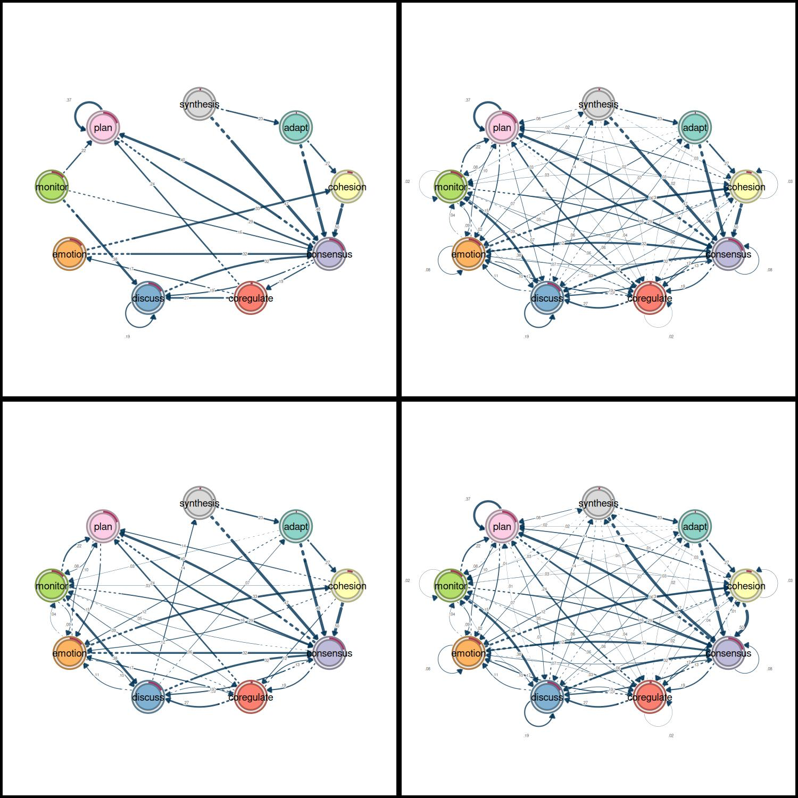
Patterns
Cliques are groups of states that are all connected with each other in both directions, above a minimum weight. They show the states that the process moves back and forth between.
layout(t(1:2))
# Identify 2-cliques (dyads) from the TNA model, excluding loops in the visualization
# A clique of size 2 is essentially a pair of connected nodes
cliques_of_two <- cliques(
model,
size = 2,
threshold = 0.15 # Only consider edges with weight >= 0.15
)
print(cliques_of_two)
#> Number of 2-cliques = 2 (weight threshold = 0.15)
#> Showing 2 cliques starting from clique number 1
#>
#> Clique 1
#> consensus plan
#> consensus 0.082 0.40
#> plan 0.290 0.37
#>
#> Clique 2
#> consensus discuss
#> consensus 0.082 0.19
#> discuss 0.321 0.19
plot(cliques_of_two, ask = FALSE)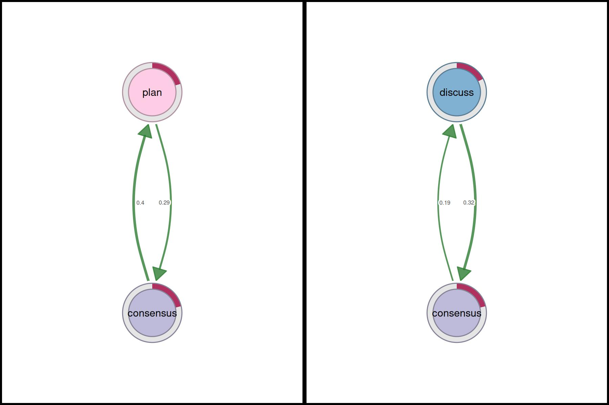
layout(t(1:3))
# Identify 3-cliques (triads) from the TNA_Model
# A clique of size 3 means a fully connected triplet of nodes
cliques_of_three <- cliques(
model,
size = 3,
threshold = 0.05 # Only consider edges with weight >= 0.05
)
print(cliques_of_three)
#> Number of 3-cliques = 3 (weight threshold = 0.05)
#> Showing 3 cliques starting from clique number 1
#>
#> Clique 1
#> consensus discuss emotion
#> consensus 0.082 0.19 0.073
#> discuss 0.321 0.19 0.106
#> emotion 0.320 0.10 0.077
#>
#> Clique 2
#> consensus emotion plan
#> consensus 0.082 0.073 0.40
#> emotion 0.320 0.077 0.10
#> plan 0.290 0.147 0.37
#>
#> Clique 3
#> consensus coregulate discuss
#> consensus 0.082 0.188 0.19
#> coregulate 0.135 0.023 0.27
#> discuss 0.321 0.084 0.19
plot(cliques_of_three, ask = FALSE)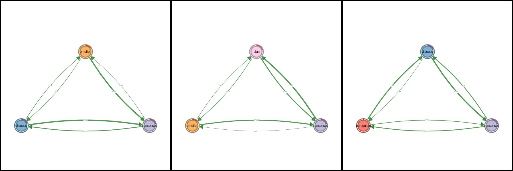
# Identify 4-cliques (quadruples) from the TNA_Model
# A clique of size 4 means four nodes that are all mutually connected
cliques_of_four <- cliques(
model,
size = 4,
threshold = 0.035 # Only consider edges with weight >= 0.035
)
print(cliques_of_four)
#> Number of 4-cliques = 1 (weight threshold = 0.035)
#> Showing 1 cliques starting from clique number 1
#>
#> Clique 1
#> consensus emotion monitor plan
#> consensus 0.082 0.073 0.047 0.40
#> emotion 0.320 0.077 0.036 0.10
#> monitor 0.159 0.091 0.018 0.22
#> plan 0.290 0.147 0.076 0.37
plot(cliques_of_four, ask = FALSE)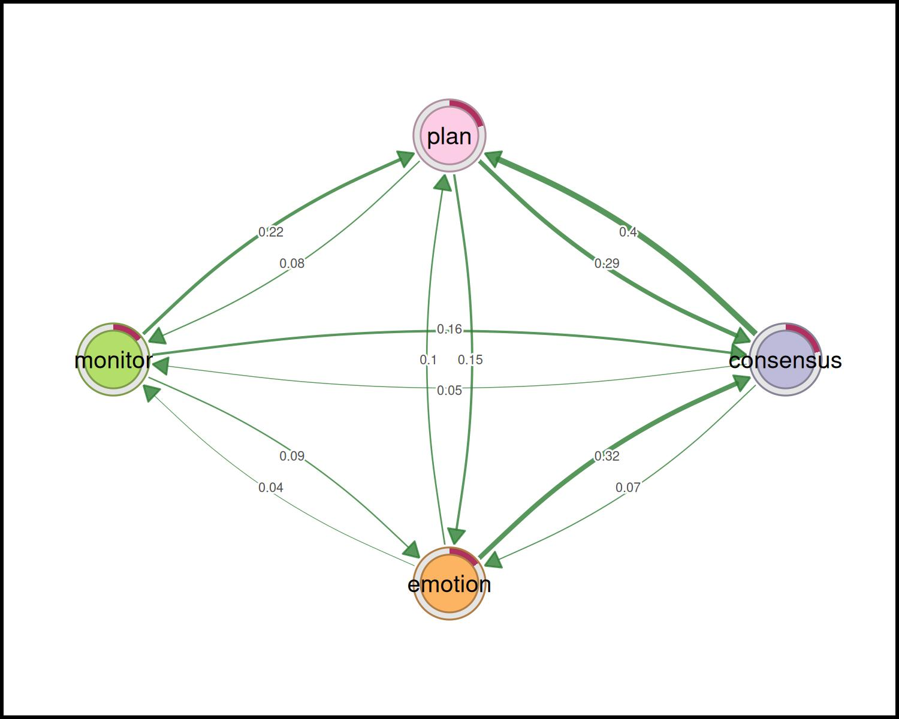
Centralities
Node-level measures
# Compute centrality measures for the TNA model
Centralities <- centralities(model)
# Visualize the centrality measures
plot(Centralities)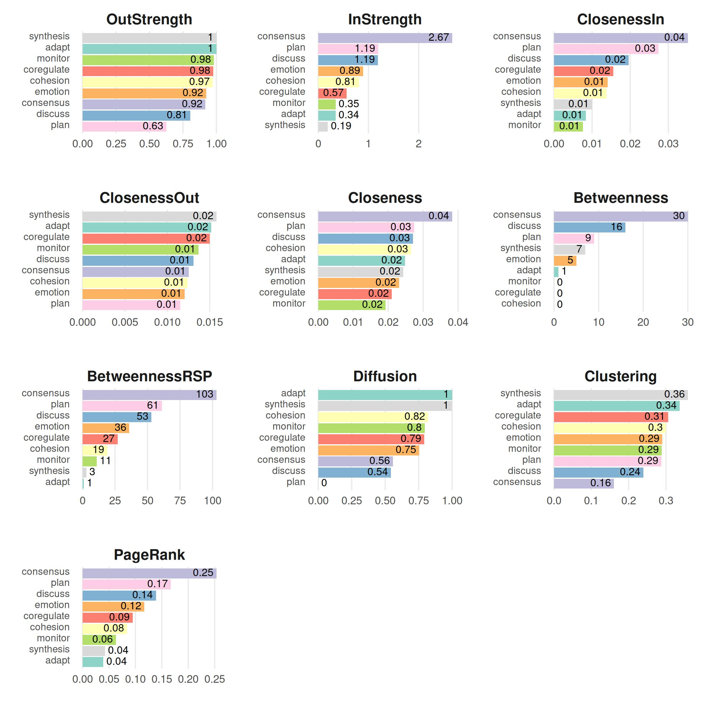
Other measures can be computed with igraph after
converting the model with as.igraph(). The hub score of a
state is high when it leads to states with high authority scores, which
in turn are the states that many hubs lead to.
# Calculate hub scores and the authority scores for the network
hits_scores <- igraph::hits_scores(as.igraph(model))
# Print the calculated hub and authority scores (and the eigenvalue)
print(hits_scores)
#> $hub
#> adapt cohesion consensus coregulate discuss emotion monitor
#> 0.96 1.00 0.65 0.69 0.74 0.82 0.74
#> plan synthesis
#> 0.87 0.90
#>
#> $authority
#> adapt cohesion consensus coregulate discuss emotion monitor
#> 0.122 0.301 1.000 0.195 0.439 0.333 0.122
#> plan synthesis
#> 0.511 0.059
#>
#> $value
#> [1] 1.6
#>
#> $options
#> $options$bmat
#> [1] "I"
#>
#> $options$n
#> [1] 9
#>
#> $options$which
#> [1] "LA"
#>
#> $options$nev
#> [1] 1
#>
#> $options$tol
#> [1] 0
#>
#> $options$ncv
#> [1] 0
#>
#> $options$ldv
#> [1] 0
#>
#> $options$ishift
#> [1] 1
#>
#> $options$maxiter
#> [1] 3000
#>
#> $options$nb
#> [1] 1
#>
#> $options$mode
#> [1] 1
#>
#> $options$start
#> [1] 1
#>
#> $options$sigma
#> [1] 0
#>
#> $options$sigmai
#> [1] 0
#>
#> $options$info
#> [1] 0
#>
#> $options$iter
#> [1] 3
#>
#> $options$nconv
#> [1] 1
#>
#> $options$numop
#> [1] 12
#>
#> $options$numopb
#> [1] 0
#>
#> $options$numreo
#> [1] 11Edge-level measures
# Edge betweenness
Edge_betweeness <- betweenness_network(model)
plot(Edge_betweeness)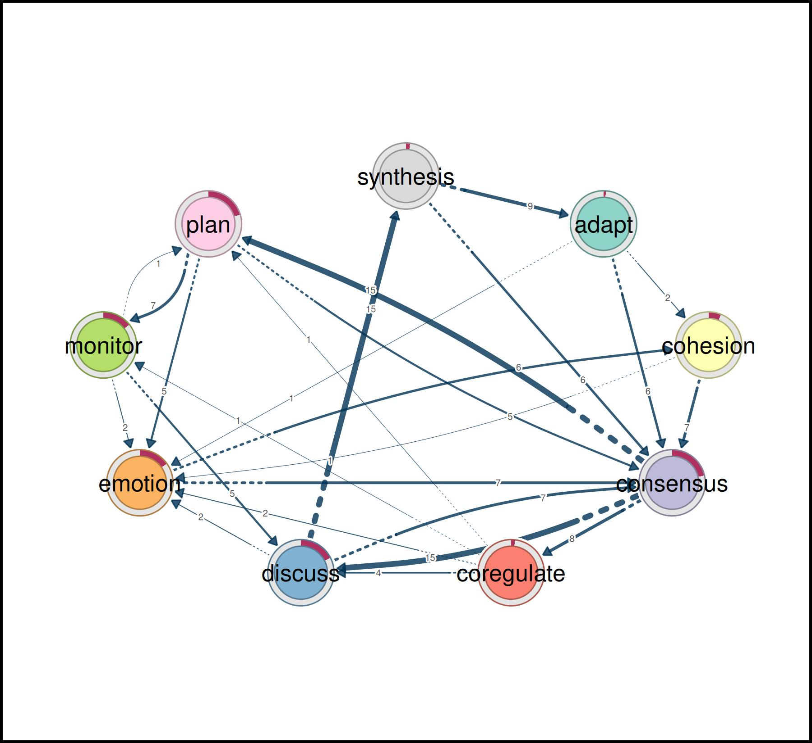
Community finding
communities <- communities(model)
print(communities)
#> Number of communities found by each algorithm
#>
#> walktrap fast_greedy label_prop infomap
#> 1 3 1 1
#> edge_betweenness leading_eigen spinglass
#> 1 3 2
#>
#> Community assignments
#>
#> state walktrap fast_greedy label_prop infomap edge_betweenness leading_eigen
#> 1 adapt 1 1 1 1 1 1
#> 2 cohesion 1 1 1 1 1 1
#> 3 consensus 1 1 1 1 1 2
#> spinglass
#> 1 1
#> 2 1
#> 3 1
#> [ reached 'max' / getOption("max.print") -- omitted 6 rows ]
plot(communities, method = "leading_eigen")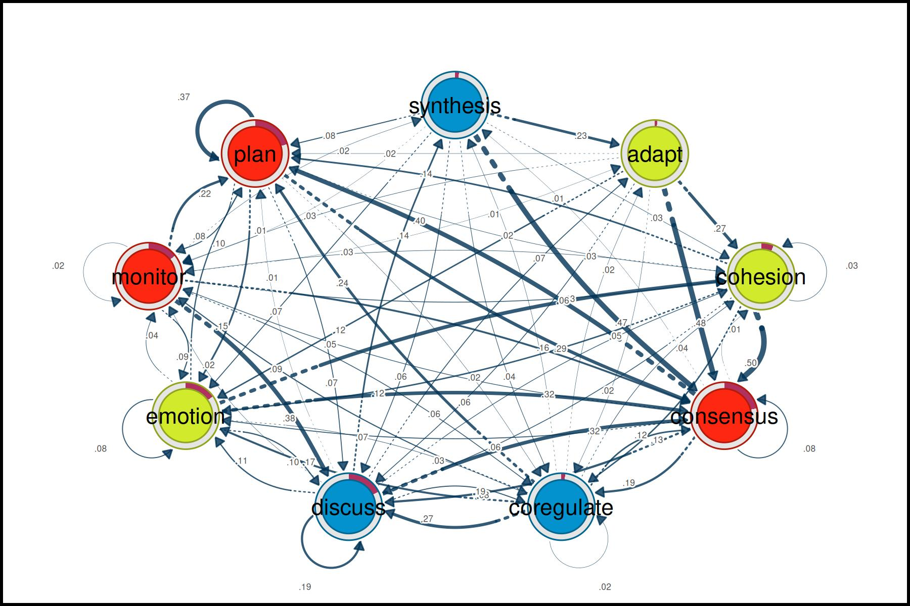
Network inference
Bootstrapping
An edge estimated from one sample of sequences can be large by chance. The bootstrap resamples the sequences and tests, for every edge, whether its weight stays within a consistency range around the observed weight (by default 75% to 125%) in at least 95% of the resamples.
# Perform bootstrapping on the TNA model with a fixed seed for reproducibility
set.seed(265)
boot <- bootstrap(model)
# Print a summary of the bootstrap results
print(summary(boot))
#> from to weight p_value sig cr_lower cr_upper ci_lower ci_upper
#> 2 cohesion adapt 0.0029 0.51 FALSE 0.0022 0.0037 0.00059 0.0054
#> 3 consensus adapt 0.0047 0.16 FALSE 0.0036 0.0059 0.00313 0.0065
#> 4 coregulate adapt 0.0162 0.15 FALSE 0.0122 0.0203 0.01078 0.0222
#> [ reached 'max' / getOption("max.print") -- omitted 75 rows ]
# Show the non-significant edges (p-value >= 0.05, the default level)
# These are edges that are less likely to be stable across bootstrap samples
print(boot, type = "nonsig")
#> Non-significant Edges
#>
#> from to weight p_value cr_lower cr_upper ci_lower ci_upper
#> 2 cohesion adapt 0.0029 0.51 0.0022 0.0037 0.00059 0.0054
#> 3 consensus adapt 0.0047 0.16 0.0036 0.0059 0.00313 0.0065
#> 4 coregulate adapt 0.0162 0.15 0.0122 0.0203 0.01078 0.0222
#> [ reached 'max' / getOption("max.print") -- omitted 24 rows ]Permutation
A difference between the networks of two groups is only evidence of a group difference if it is larger than the differences that arise when the sequences are assigned to the groups at random. The permutation test reassigns the sequences many times and gives a p-value for the difference of every edge, and of the requested centralities.
# Create TNA for the high-achievers subset (rows 1 to 1000)
Hi <- tna(head(group_regulation, 1000))
# Create TNA for the low-achievers subset (rows 1001 to 2000)
Lo <- tna(tail(group_regulation, 1000))
# Plot a comparison of the "Hi" and "Lo" models
# The 'minimum' parameter is set to 0.01, so edges with weights >= 0.01 are shown
plot_compare(Hi, Lo, minimum = 0.01)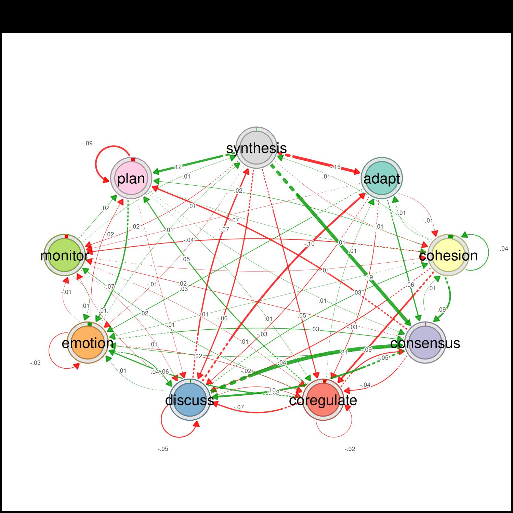
# Run a permutation test to determine statistical significance of differences
# between "Hi" and "Lo"
# The 'iter' argument is set to 1000, meaning 1000 permutations are performed
Permutation <- permutation_test(Hi, Lo, iter = 1000, measures = "Betweenness")
# Plot the significant differences identified in the permutation test
plot(Permutation, minimum = 0.01)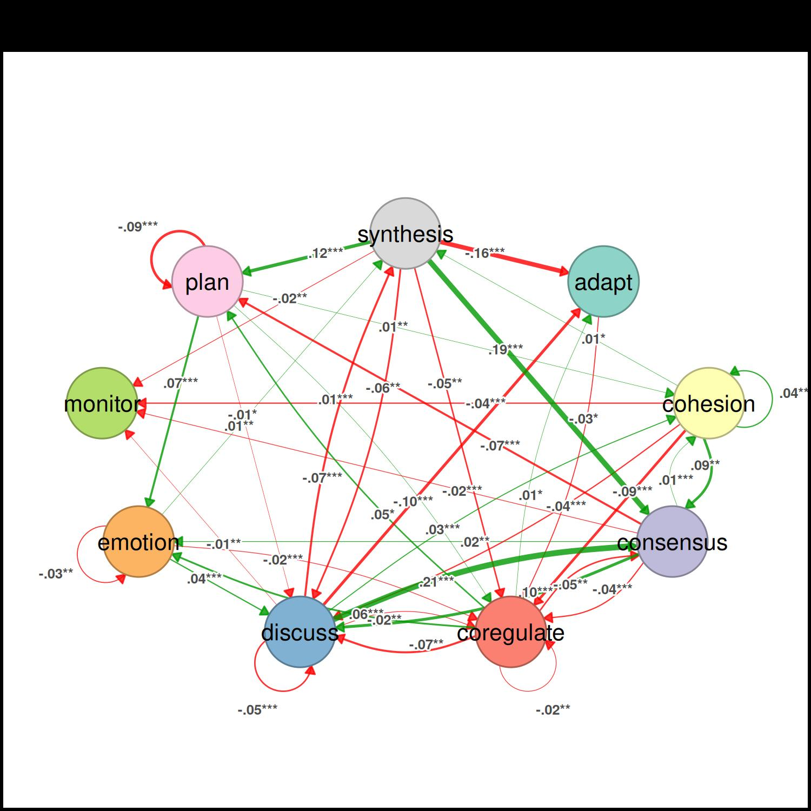
The tables of the test give the observed difference, its effect size, and the p-value of every edge and of the betweenness of every state.
summary(Permutation)
#> from to diff_true effect_size p_value
#> 1 adapt adapt 0.00 NA 1.000
#> 2 cohesion adapt 0.01 1.99 0.061
#> 3 consensus adapt 0.00 -0.76 0.412
#> 4 coregulate adapt 0.01 2.00 0.048
#> 5 discuss adapt -0.10 -11.48 0.001
#> 6 emotion adapt 0.00 0.91 0.460
#> [ reached 'max' / getOption("max.print") -- omitted 75 rows ]
summary(Permutation, what = "centralities")
#> state centrality diff_true effect_size p_value
#> 1 adapt Betweenness -3 -6.69 0.001
#> 2 cohesion Betweenness 0 0.00 1.000
#> 3 consensus Betweenness 5 7.01 0.001
#> 4 coregulate Betweenness -3 -0.97 0.265
#> 5 discuss Betweenness 2 1.83 0.233
#> 6 emotion Betweenness 2 16.33 0.001
#> [ reached 'max' / getOption("max.print") -- omitted 3 rows ]Interpreting the Results of the Case-Dropping Bootstrap for Centrality Indices
A centrality ranking is only worth interpreting if it does not change when part of the data is missing. The case-dropping bootstrap drops increasing proportions of the sequences and correlates the centralities of the remaining data with those of the full data; the CS-coefficient is the largest proportion of dropped sequences at which the correlation is at least 0.7 in at least 95% of the resamples.
# Results of the Case-Dropping Bootstrap for Centrality Indices
Centrality_stability <- estimate_centrality_stability(model, iter = 100)
plot(Centrality_stability)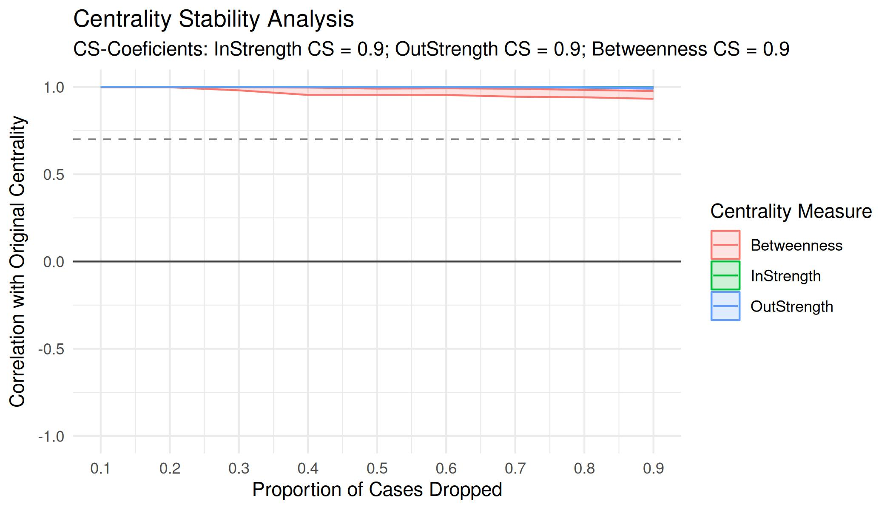
More tutorials
Package articles · sonsoles.me/tna
- Getting started with tna — build, plot, and summarize a transition network
-
Preparing
data — turn event logs into sequences with
prepare_data() - A showcase of the main functions — models, centralities, communities, and validation
- Grouped sequence data — build and compare networks of groups
- Cliques and communities — find the densely connected states
- Frequency-based TNA — model transition counts instead of probabilities
- Attention TNA — accumulate transitions across temporal distances
- Validating a transition network — Markov order, bootstrap, case-dropping, reliability, and permutation tests
- Function reference sheet — every function with its arguments and an example
Tutorials · sonsoles.me
- A comprehensive TNA tutorial — an updated walkthrough of transition network analysis
- Data preparation — from raw event data to sequences
- Comparing models — network comparison of TNA models
- Clustering — discover and analyze clusters of sequences
- Group analysis — permutation tests, bootstrapping, and clusters
Book chapters · Advanced Learning Analytics Methods
- Mapping relational dynamics with TNA — a primer and tutorial
- Frequency transition network analysis — a primer and tutorial on FTNA
- Mining patterns and clusters with TNA — a heterogeneity approach
Dynalytics · dynasite.org
- Package sites — documentation of the R packages of the Dynalytics framework
- Tools — interactive web apps, jamovi, and Python
- CarmNotes — single-file notebooks that run the analyses in the browser, even offline
- Selected articles — publications on the framework and its methods